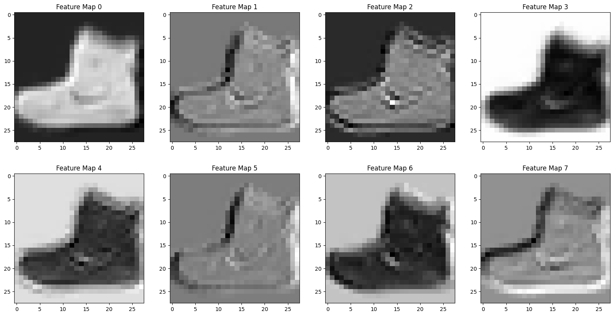
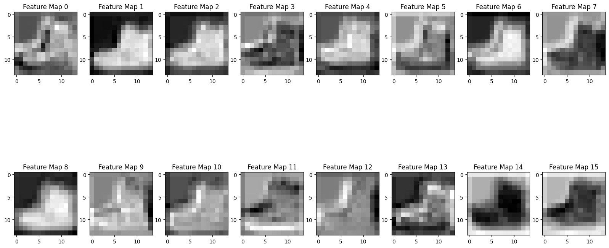
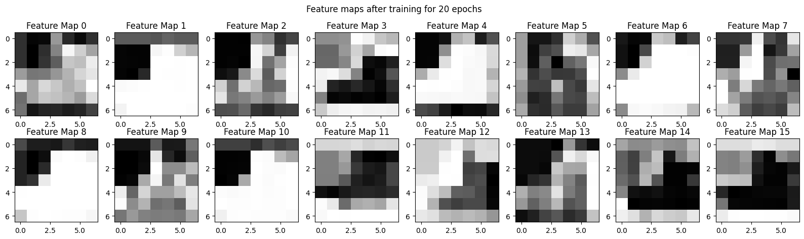
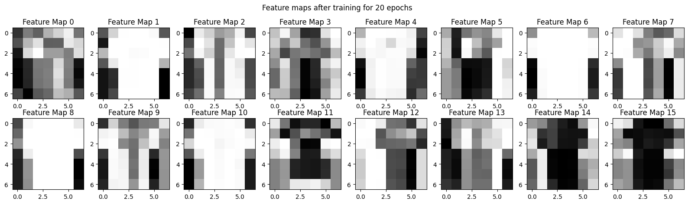

Fine tuning a model with torchvision#
from IPython.display import YouTubeVideo
import numpy as np
import matplotlib.pyplot as plt
import pandas as pd
import torch
import torch.nn as nn
import torch.optim as optim
from torch.utils.data import DataLoader
from torchvision.datasets import FashionMNIST
from torchvision.transforms import ToTensor
import torch.nn as nn
import torch.optim as optim
import torch
Using pytorch to build convolutional network#

from IPython.display import Image
train = FashionMNIST('.', download = True)
plt.imshow(train[0][0], cmap = 'gray')
100%|██████████| 26.4M/26.4M [00:02<00:00, 12.0MB/s]
100%|██████████| 29.5k/29.5k [00:00<00:00, 189kB/s]
100%|██████████| 4.42M/4.42M [00:01<00:00, 3.43MB/s]
100%|██████████| 5.15k/5.15k [00:00<00:00, 13.2MB/s]
<matplotlib.image.AxesImage at 0x7ed72b52c410>

train = FashionMNIST('.', download = True, transform=ToTensor())
trainloader = DataLoader(train, batch_size = 32)
train[0][0].shape
torch.Size([1, 28, 28])
conv1 = nn.Conv2d(in_channels=1, out_channels=8, kernel_size=3, padding = 1)
output = conv1(train[0][0].unsqueeze(0))
fig, ax = plt.subplots(2, 4, figsize = (20, 10))
counter = 0
for i in range(2):
for j in range(4):
ax[i, j].imshow(output[0][counter].detach().numpy(), cmap = 'gray')
ax[i,j].set_title(f'Feature Map {counter}')
counter += 1

pool = nn.MaxPool2d(2)
output_pool = pool(output)
output_pool[0].shape
torch.Size([8, 14, 14])
conv2 = nn.Conv2d(in_channels=8, out_channels=16, kernel_size=3, padding = 1)
output_conv2 = conv2(output_pool)
fig, ax = plt.subplots(2, 8, figsize = (20, 10))
counter = 0
for i in range(2):
for j in range(8):
ax[i, j].imshow(output_conv2[0][counter].detach().numpy(), cmap = 'gray')
ax[i,j].set_title(f'Feature Map {counter}')
counter += 1

flattener = nn.Flatten()
flattener(output_conv2)
tensor([[-0.0402, -0.0749, -0.0749, ..., 0.0985, 0.1008, 0.0570]],
grad_fn=<ViewBackward0>)
flattener(pool(output_conv2)).shape
torch.Size([1, 784])
16*7*7
784
linear1 = nn.Linear(in_features=16*7*7, out_features=128)
linear2 = nn.Linear(in_features = 128, out_features = 10)
conv_activation = nn.Tanh()
linear_activation = nn.ReLU()
model = nn.Sequential(conv1, conv_activation, pool,
conv2, conv_activation, pool,
flattener,
linear1, linear_activation,
linear2)
optimizer = optim.SGD(model.parameters(), lr = 0.01)
loss_fn = nn.CrossEntropyLoss()
from tqdm import tqdm
device = 'cuda' if torch.cuda.is_available() else 'cpu'
model = model.to(device)
losses = []
for epoch in tqdm(range(20)):
for X, y in trainloader:
X, y = X.to(device), y.to(device)
yhat = model(X)
loss = loss_fn(yhat, y)
optimizer.zero_grad()
loss.backward()
optimizer.step()
losses.append(loss.item())
print(f'Epoch {epoch} Loss: {loss.item()}')
5%|▌ | 1/20 [00:10<03:25, 10.83s/it]
Epoch 0 Loss: 0.6567175388336182
10%|█ | 2/20 [00:20<03:00, 10.04s/it]
Epoch 1 Loss: 0.5261340141296387
15%|█▌ | 3/20 [00:29<02:45, 9.73s/it]
Epoch 2 Loss: 0.44638901948928833
20%|██ | 4/20 [00:39<02:33, 9.59s/it]
Epoch 3 Loss: 0.39436614513397217
25%|██▌ | 5/20 [00:48<02:22, 9.52s/it]
Epoch 4 Loss: 0.3513825833797455
30%|███ | 6/20 [00:57<02:12, 9.46s/it]
Epoch 5 Loss: 0.32126080989837646
35%|███▌ | 7/20 [01:07<02:02, 9.39s/it]
Epoch 6 Loss: 0.29670247435569763
40%|████ | 8/20 [01:16<01:52, 9.36s/it]
Epoch 7 Loss: 0.27778732776641846
45%|████▌ | 9/20 [01:25<01:42, 9.33s/it]
Epoch 8 Loss: 0.2600334584712982
50%|█████ | 10/20 [01:34<01:33, 9.31s/it]
Epoch 9 Loss: 0.24694637954235077
55%|█████▌ | 11/20 [01:44<01:23, 9.31s/it]
Epoch 10 Loss: 0.236252099275589
60%|██████ | 12/20 [01:53<01:14, 9.33s/it]
Epoch 11 Loss: 0.22740080952644348
65%|██████▌ | 13/20 [02:02<01:05, 9.34s/it]
Epoch 12 Loss: 0.21641753613948822
70%|███████ | 14/20 [02:12<00:55, 9.32s/it]
Epoch 13 Loss: 0.20898191630840302
75%|███████▌ | 15/20 [02:21<00:46, 9.30s/it]
Epoch 14 Loss: 0.2006460428237915
80%|████████ | 16/20 [02:30<00:37, 9.28s/it]
Epoch 15 Loss: 0.19475816190242767
85%|████████▌ | 17/20 [02:39<00:27, 9.29s/it]
Epoch 16 Loss: 0.18788769841194153
90%|█████████ | 18/20 [02:49<00:18, 9.27s/it]
Epoch 17 Loss: 0.18250395357608795
95%|█████████▌| 19/20 [02:58<00:09, 9.39s/it]
Epoch 18 Loss: 0.17455258965492249
100%|██████████| 20/20 [03:08<00:00, 9.43s/it]
Epoch 19 Loss: 0.17276710271835327
model
Sequential(
(0): Conv2d(1, 8, kernel_size=(3, 3), stride=(1, 1), padding=(1, 1))
(1): Tanh()
(2): MaxPool2d(kernel_size=2, stride=2, padding=0, dilation=1, ceil_mode=False)
(3): Conv2d(8, 16, kernel_size=(3, 3), stride=(1, 1), padding=(1, 1))
(4): Tanh()
(5): MaxPool2d(kernel_size=2, stride=2, padding=0, dilation=1, ceil_mode=False)
(6): Flatten(start_dim=1, end_dim=-1)
(7): Linear(in_features=784, out_features=128, bias=True)
(8): ReLU()
(9): Linear(in_features=128, out_features=10, bias=True)
)
Exploring what the network is paying attention to by visualizing the results of the convolutions after being trained for 20 epochs.
x = train[0][0].to(device)
for layer in model:
print(layer)
if isinstance(layer, nn.Flatten):
break
x = layer(x)
Conv2d(1, 8, kernel_size=(3, 3), stride=(1, 1), padding=(1, 1))
Tanh()
MaxPool2d(kernel_size=2, stride=2, padding=0, dilation=1, ceil_mode=False)
Conv2d(8, 16, kernel_size=(3, 3), stride=(1, 1), padding=(1, 1))
Tanh()
MaxPool2d(kernel_size=2, stride=2, padding=0, dilation=1, ceil_mode=False)
Flatten(start_dim=1, end_dim=-1)
x.shape
torch.Size([16, 7, 7])
fig, ax = plt.subplots(2, 8, figsize = (20, 5))
counter = 0
for i in range(2):
for j in range(8):
ax[i, j].imshow(x[counter].cpu().detach().numpy(), cmap = 'gray')
ax[i,j].set_title(f'Feature Map {counter}')
counter += 1
fig.suptitle('Feature maps after training for 20 epochs');

x = train[1][0].to(device)
for layer in model:
print(layer)
if isinstance(layer, nn.Flatten):
break
x = layer(x)
Conv2d(1, 8, kernel_size=(3, 3), stride=(1, 1), padding=(1, 1))
Tanh()
MaxPool2d(kernel_size=2, stride=2, padding=0, dilation=1, ceil_mode=False)
Conv2d(8, 16, kernel_size=(3, 3), stride=(1, 1), padding=(1, 1))
Tanh()
MaxPool2d(kernel_size=2, stride=2, padding=0, dilation=1, ceil_mode=False)
Flatten(start_dim=1, end_dim=-1)
fig, ax = plt.subplots(2, 8, figsize = (20, 5))
counter = 0
for i in range(2):
for j in range(8):
ax[i, j].imshow(x[counter].cpu().detach().numpy(), cmap = 'gray')
ax[i,j].set_title(f'Feature Map {counter}')
counter += 1
fig.suptitle('Feature maps after training for 20 epochs');

correct = 0
total = 0
for x, y in trainloader:
x, y = x.to(device), y.to(device)
yhat = model(x)
correct += (torch.argmax(yhat, dim = 1) == y).sum()
total += len(y)
correct/total
tensor(0.9143, device='cuda:0')
torch.save(model, 'fashionmodel.pt')
from torchvision.models import resnet50, ResNet50_Weights
#loading in the prebuilt model weights
weights = ResNet50_Weights.DEFAULT
#loads in the transformations to the images that need
#to happen before the image goes into the network
transforms = weights.transforms()
#load model and weights
model = resnet50(weights = weights)
model
ResNet(
(conv1): Conv2d(3, 64, kernel_size=(7, 7), stride=(2, 2), padding=(3, 3), bias=False)
(bn1): BatchNorm2d(64, eps=1e-05, momentum=0.1, affine=True, track_running_stats=True)
(relu): ReLU(inplace=True)
(maxpool): MaxPool2d(kernel_size=3, stride=2, padding=1, dilation=1, ceil_mode=False)
(layer1): Sequential(
(0): Bottleneck(
(conv1): Conv2d(64, 64, kernel_size=(1, 1), stride=(1, 1), bias=False)
(bn1): BatchNorm2d(64, eps=1e-05, momentum=0.1, affine=True, track_running_stats=True)
(conv2): Conv2d(64, 64, kernel_size=(3, 3), stride=(1, 1), padding=(1, 1), bias=False)
(bn2): BatchNorm2d(64, eps=1e-05, momentum=0.1, affine=True, track_running_stats=True)
(conv3): Conv2d(64, 256, kernel_size=(1, 1), stride=(1, 1), bias=False)
(bn3): BatchNorm2d(256, eps=1e-05, momentum=0.1, affine=True, track_running_stats=True)
(relu): ReLU(inplace=True)
(downsample): Sequential(
(0): Conv2d(64, 256, kernel_size=(1, 1), stride=(1, 1), bias=False)
(1): BatchNorm2d(256, eps=1e-05, momentum=0.1, affine=True, track_running_stats=True)
)
)
(1): Bottleneck(
(conv1): Conv2d(256, 64, kernel_size=(1, 1), stride=(1, 1), bias=False)
(bn1): BatchNorm2d(64, eps=1e-05, momentum=0.1, affine=True, track_running_stats=True)
(conv2): Conv2d(64, 64, kernel_size=(3, 3), stride=(1, 1), padding=(1, 1), bias=False)
(bn2): BatchNorm2d(64, eps=1e-05, momentum=0.1, affine=True, track_running_stats=True)
(conv3): Conv2d(64, 256, kernel_size=(1, 1), stride=(1, 1), bias=False)
(bn3): BatchNorm2d(256, eps=1e-05, momentum=0.1, affine=True, track_running_stats=True)
(relu): ReLU(inplace=True)
)
(2): Bottleneck(
(conv1): Conv2d(256, 64, kernel_size=(1, 1), stride=(1, 1), bias=False)
(bn1): BatchNorm2d(64, eps=1e-05, momentum=0.1, affine=True, track_running_stats=True)
(conv2): Conv2d(64, 64, kernel_size=(3, 3), stride=(1, 1), padding=(1, 1), bias=False)
(bn2): BatchNorm2d(64, eps=1e-05, momentum=0.1, affine=True, track_running_stats=True)
(conv3): Conv2d(64, 256, kernel_size=(1, 1), stride=(1, 1), bias=False)
(bn3): BatchNorm2d(256, eps=1e-05, momentum=0.1, affine=True, track_running_stats=True)
(relu): ReLU(inplace=True)
)
)
(layer2): Sequential(
(0): Bottleneck(
(conv1): Conv2d(256, 128, kernel_size=(1, 1), stride=(1, 1), bias=False)
(bn1): BatchNorm2d(128, eps=1e-05, momentum=0.1, affine=True, track_running_stats=True)
(conv2): Conv2d(128, 128, kernel_size=(3, 3), stride=(2, 2), padding=(1, 1), bias=False)
(bn2): BatchNorm2d(128, eps=1e-05, momentum=0.1, affine=True, track_running_stats=True)
(conv3): Conv2d(128, 512, kernel_size=(1, 1), stride=(1, 1), bias=False)
(bn3): BatchNorm2d(512, eps=1e-05, momentum=0.1, affine=True, track_running_stats=True)
(relu): ReLU(inplace=True)
(downsample): Sequential(
(0): Conv2d(256, 512, kernel_size=(1, 1), stride=(2, 2), bias=False)
(1): BatchNorm2d(512, eps=1e-05, momentum=0.1, affine=True, track_running_stats=True)
)
)
(1): Bottleneck(
(conv1): Conv2d(512, 128, kernel_size=(1, 1), stride=(1, 1), bias=False)
(bn1): BatchNorm2d(128, eps=1e-05, momentum=0.1, affine=True, track_running_stats=True)
(conv2): Conv2d(128, 128, kernel_size=(3, 3), stride=(1, 1), padding=(1, 1), bias=False)
(bn2): BatchNorm2d(128, eps=1e-05, momentum=0.1, affine=True, track_running_stats=True)
(conv3): Conv2d(128, 512, kernel_size=(1, 1), stride=(1, 1), bias=False)
(bn3): BatchNorm2d(512, eps=1e-05, momentum=0.1, affine=True, track_running_stats=True)
(relu): ReLU(inplace=True)
)
(2): Bottleneck(
(conv1): Conv2d(512, 128, kernel_size=(1, 1), stride=(1, 1), bias=False)
(bn1): BatchNorm2d(128, eps=1e-05, momentum=0.1, affine=True, track_running_stats=True)
(conv2): Conv2d(128, 128, kernel_size=(3, 3), stride=(1, 1), padding=(1, 1), bias=False)
(bn2): BatchNorm2d(128, eps=1e-05, momentum=0.1, affine=True, track_running_stats=True)
(conv3): Conv2d(128, 512, kernel_size=(1, 1), stride=(1, 1), bias=False)
(bn3): BatchNorm2d(512, eps=1e-05, momentum=0.1, affine=True, track_running_stats=True)
(relu): ReLU(inplace=True)
)
(3): Bottleneck(
(conv1): Conv2d(512, 128, kernel_size=(1, 1), stride=(1, 1), bias=False)
(bn1): BatchNorm2d(128, eps=1e-05, momentum=0.1, affine=True, track_running_stats=True)
(conv2): Conv2d(128, 128, kernel_size=(3, 3), stride=(1, 1), padding=(1, 1), bias=False)
(bn2): BatchNorm2d(128, eps=1e-05, momentum=0.1, affine=True, track_running_stats=True)
(conv3): Conv2d(128, 512, kernel_size=(1, 1), stride=(1, 1), bias=False)
(bn3): BatchNorm2d(512, eps=1e-05, momentum=0.1, affine=True, track_running_stats=True)
(relu): ReLU(inplace=True)
)
)
(layer3): Sequential(
(0): Bottleneck(
(conv1): Conv2d(512, 256, kernel_size=(1, 1), stride=(1, 1), bias=False)
(bn1): BatchNorm2d(256, eps=1e-05, momentum=0.1, affine=True, track_running_stats=True)
(conv2): Conv2d(256, 256, kernel_size=(3, 3), stride=(2, 2), padding=(1, 1), bias=False)
(bn2): BatchNorm2d(256, eps=1e-05, momentum=0.1, affine=True, track_running_stats=True)
(conv3): Conv2d(256, 1024, kernel_size=(1, 1), stride=(1, 1), bias=False)
(bn3): BatchNorm2d(1024, eps=1e-05, momentum=0.1, affine=True, track_running_stats=True)
(relu): ReLU(inplace=True)
(downsample): Sequential(
(0): Conv2d(512, 1024, kernel_size=(1, 1), stride=(2, 2), bias=False)
(1): BatchNorm2d(1024, eps=1e-05, momentum=0.1, affine=True, track_running_stats=True)
)
)
(1): Bottleneck(
(conv1): Conv2d(1024, 256, kernel_size=(1, 1), stride=(1, 1), bias=False)
(bn1): BatchNorm2d(256, eps=1e-05, momentum=0.1, affine=True, track_running_stats=True)
(conv2): Conv2d(256, 256, kernel_size=(3, 3), stride=(1, 1), padding=(1, 1), bias=False)
(bn2): BatchNorm2d(256, eps=1e-05, momentum=0.1, affine=True, track_running_stats=True)
(conv3): Conv2d(256, 1024, kernel_size=(1, 1), stride=(1, 1), bias=False)
(bn3): BatchNorm2d(1024, eps=1e-05, momentum=0.1, affine=True, track_running_stats=True)
(relu): ReLU(inplace=True)
)
(2): Bottleneck(
(conv1): Conv2d(1024, 256, kernel_size=(1, 1), stride=(1, 1), bias=False)
(bn1): BatchNorm2d(256, eps=1e-05, momentum=0.1, affine=True, track_running_stats=True)
(conv2): Conv2d(256, 256, kernel_size=(3, 3), stride=(1, 1), padding=(1, 1), bias=False)
(bn2): BatchNorm2d(256, eps=1e-05, momentum=0.1, affine=True, track_running_stats=True)
(conv3): Conv2d(256, 1024, kernel_size=(1, 1), stride=(1, 1), bias=False)
(bn3): BatchNorm2d(1024, eps=1e-05, momentum=0.1, affine=True, track_running_stats=True)
(relu): ReLU(inplace=True)
)
(3): Bottleneck(
(conv1): Conv2d(1024, 256, kernel_size=(1, 1), stride=(1, 1), bias=False)
(bn1): BatchNorm2d(256, eps=1e-05, momentum=0.1, affine=True, track_running_stats=True)
(conv2): Conv2d(256, 256, kernel_size=(3, 3), stride=(1, 1), padding=(1, 1), bias=False)
(bn2): BatchNorm2d(256, eps=1e-05, momentum=0.1, affine=True, track_running_stats=True)
(conv3): Conv2d(256, 1024, kernel_size=(1, 1), stride=(1, 1), bias=False)
(bn3): BatchNorm2d(1024, eps=1e-05, momentum=0.1, affine=True, track_running_stats=True)
(relu): ReLU(inplace=True)
)
(4): Bottleneck(
(conv1): Conv2d(1024, 256, kernel_size=(1, 1), stride=(1, 1), bias=False)
(bn1): BatchNorm2d(256, eps=1e-05, momentum=0.1, affine=True, track_running_stats=True)
(conv2): Conv2d(256, 256, kernel_size=(3, 3), stride=(1, 1), padding=(1, 1), bias=False)
(bn2): BatchNorm2d(256, eps=1e-05, momentum=0.1, affine=True, track_running_stats=True)
(conv3): Conv2d(256, 1024, kernel_size=(1, 1), stride=(1, 1), bias=False)
(bn3): BatchNorm2d(1024, eps=1e-05, momentum=0.1, affine=True, track_running_stats=True)
(relu): ReLU(inplace=True)
)
(5): Bottleneck(
(conv1): Conv2d(1024, 256, kernel_size=(1, 1), stride=(1, 1), bias=False)
(bn1): BatchNorm2d(256, eps=1e-05, momentum=0.1, affine=True, track_running_stats=True)
(conv2): Conv2d(256, 256, kernel_size=(3, 3), stride=(1, 1), padding=(1, 1), bias=False)
(bn2): BatchNorm2d(256, eps=1e-05, momentum=0.1, affine=True, track_running_stats=True)
(conv3): Conv2d(256, 1024, kernel_size=(1, 1), stride=(1, 1), bias=False)
(bn3): BatchNorm2d(1024, eps=1e-05, momentum=0.1, affine=True, track_running_stats=True)
(relu): ReLU(inplace=True)
)
)
(layer4): Sequential(
(0): Bottleneck(
(conv1): Conv2d(1024, 512, kernel_size=(1, 1), stride=(1, 1), bias=False)
(bn1): BatchNorm2d(512, eps=1e-05, momentum=0.1, affine=True, track_running_stats=True)
(conv2): Conv2d(512, 512, kernel_size=(3, 3), stride=(2, 2), padding=(1, 1), bias=False)
(bn2): BatchNorm2d(512, eps=1e-05, momentum=0.1, affine=True, track_running_stats=True)
(conv3): Conv2d(512, 2048, kernel_size=(1, 1), stride=(1, 1), bias=False)
(bn3): BatchNorm2d(2048, eps=1e-05, momentum=0.1, affine=True, track_running_stats=True)
(relu): ReLU(inplace=True)
(downsample): Sequential(
(0): Conv2d(1024, 2048, kernel_size=(1, 1), stride=(2, 2), bias=False)
(1): BatchNorm2d(2048, eps=1e-05, momentum=0.1, affine=True, track_running_stats=True)
)
)
(1): Bottleneck(
(conv1): Conv2d(2048, 512, kernel_size=(1, 1), stride=(1, 1), bias=False)
(bn1): BatchNorm2d(512, eps=1e-05, momentum=0.1, affine=True, track_running_stats=True)
(conv2): Conv2d(512, 512, kernel_size=(3, 3), stride=(1, 1), padding=(1, 1), bias=False)
(bn2): BatchNorm2d(512, eps=1e-05, momentum=0.1, affine=True, track_running_stats=True)
(conv3): Conv2d(512, 2048, kernel_size=(1, 1), stride=(1, 1), bias=False)
(bn3): BatchNorm2d(2048, eps=1e-05, momentum=0.1, affine=True, track_running_stats=True)
(relu): ReLU(inplace=True)
)
(2): Bottleneck(
(conv1): Conv2d(2048, 512, kernel_size=(1, 1), stride=(1, 1), bias=False)
(bn1): BatchNorm2d(512, eps=1e-05, momentum=0.1, affine=True, track_running_stats=True)
(conv2): Conv2d(512, 512, kernel_size=(3, 3), stride=(1, 1), padding=(1, 1), bias=False)
(bn2): BatchNorm2d(512, eps=1e-05, momentum=0.1, affine=True, track_running_stats=True)
(conv3): Conv2d(512, 2048, kernel_size=(1, 1), stride=(1, 1), bias=False)
(bn3): BatchNorm2d(2048, eps=1e-05, momentum=0.1, affine=True, track_running_stats=True)
(relu): ReLU(inplace=True)
)
)
(avgpool): AdaptiveAvgPool2d(output_size=(1, 1))
(fc): Linear(in_features=2048, out_features=1000, bias=True)
)
Using our own data#
Here is a link to a dataset containing images of cats and dogs. link
Save this in your google drive and adjust the link below accordingly.
model.fc = nn.Linear(2048, 2)
model.fc
Linear(in_features=2048, out_features=2, bias=True)
from torchvision.datasets import ImageFolder
from torch.utils.data import DataLoader
from tqdm import tqdm
from google.colab import drive
drive.mount('/content/drive')
Drive already mounted at /content/drive; to attempt to forcibly remount, call drive.mount("/content/drive", force_remount=True).
path = 'drive/MyDrive/small/train/'
train = ImageFolder(path, transform=transforms)
val = ImageFolder('drive/MyDrive/small/val/', transform = transforms)
trainloader = DataLoader(train, batch_size = 32)
loss_fn = nn.CrossEntropyLoss()
optimizer = optim.SGD(model.parameters(), lr = 0.01)
device = 'cuda' if torch.cuda.is_available() else 'cpu'
transforms
ImageClassification(
crop_size=[224]
resize_size=[232]
mean=[0.485, 0.456, 0.406]
std=[0.229, 0.224, 0.225]
interpolation=InterpolationMode.BILINEAR
)
model = model.to(device)
# model.eval()
for epoch in tqdm(range(20)):
for x,y in trainloader:
#x = transforms(x)
x, y = x.to(device), y.to(device)
yhat = model(x)
loss = loss_fn(yhat, y)
optimizer.zero_grad()
loss.backward()
optimizer.step()
print(f'Epoch {epoch} Loss: {loss.item()}')
5%|▌ | 1/20 [00:16<05:18, 16.75s/it]
Epoch 0 Loss: 0.043970320373773575
10%|█ | 2/20 [00:29<04:23, 14.64s/it]
Epoch 1 Loss: 0.05635027959942818
15%|█▌ | 3/20 [00:43<03:57, 13.97s/it]
Epoch 2 Loss: 0.0582401268184185
20%|██ | 4/20 [00:56<03:38, 13.66s/it]
Epoch 3 Loss: 0.0518515482544899
25%|██▌ | 5/20 [01:09<03:23, 13.54s/it]
Epoch 4 Loss: 0.04258507117629051
30%|███ | 6/20 [01:22<03:07, 13.43s/it]
Epoch 5 Loss: 0.03433478996157646
35%|███▌ | 7/20 [01:36<02:53, 13.37s/it]
Epoch 6 Loss: 0.02757662907242775
40%|████ | 8/20 [01:49<02:40, 13.37s/it]
Epoch 7 Loss: 0.021891286596655846
45%|████▌ | 9/20 [02:02<02:26, 13.31s/it]
Epoch 8 Loss: 0.0173431858420372
50%|█████ | 10/20 [02:15<02:13, 13.31s/it]
Epoch 9 Loss: 0.013938832096755505
55%|█████▌ | 11/20 [02:29<02:01, 13.46s/it]
Epoch 10 Loss: 0.011281240731477737
60%|██████ | 12/20 [02:42<01:47, 13.38s/it]
Epoch 11 Loss: 0.009318061172962189
65%|██████▌ | 13/20 [02:56<01:33, 13.36s/it]
Epoch 12 Loss: 0.007778175640851259
70%|███████ | 14/20 [03:09<01:20, 13.34s/it]
Epoch 13 Loss: 0.006601898465305567
75%|███████▌ | 15/20 [03:22<01:06, 13.31s/it]
Epoch 14 Loss: 0.005683417432010174
80%|████████ | 16/20 [03:36<00:53, 13.32s/it]
Epoch 15 Loss: 0.004946483764797449
85%|████████▌ | 17/20 [03:49<00:39, 13.32s/it]
Epoch 16 Loss: 0.004376062657684088
90%|█████████ | 18/20 [04:02<00:26, 13.38s/it]
Epoch 17 Loss: 0.003895151661708951
95%|█████████▌| 19/20 [04:16<00:13, 13.31s/it]
Epoch 18 Loss: 0.0034960140474140644
100%|██████████| 20/20 [04:29<00:00, 13.47s/it]
Epoch 19 Loss: 0.0031750774942338467
torch.save(model, 'catdog.pt')
model.eval()
correct = 0
total = 0
model = model.to(device)
for x,y in trainloader:
# x,y = x.to(device), y.to(device)
# x = transforms(x)
x, y = x.to(device), y.to(device)
yhat = model(x)
correct += (torch.argmax(yhat, dim = 1) == y).sum()
total += len(y)
correct/total
tensor(0.9963, device='cuda:0')
valloader = DataLoader(val, batch_size=32)
correct = 0
total = 0
model = model.to(device)
model.eval()
for x,y in tqdm(valloader):
x,y = x.to(device), y.to(device)
#x = transforms(x)
#x, y = x.to(device), y.to(device)
yhat = model(x)
correct += (torch.argmax(yhat, dim = 1) == y).sum()
total += len(y)
100%|██████████| 34/34 [00:06<00:00, 5.45it/s]
correct/total
tensor(0.9728, device='cuda:0')